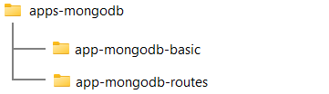
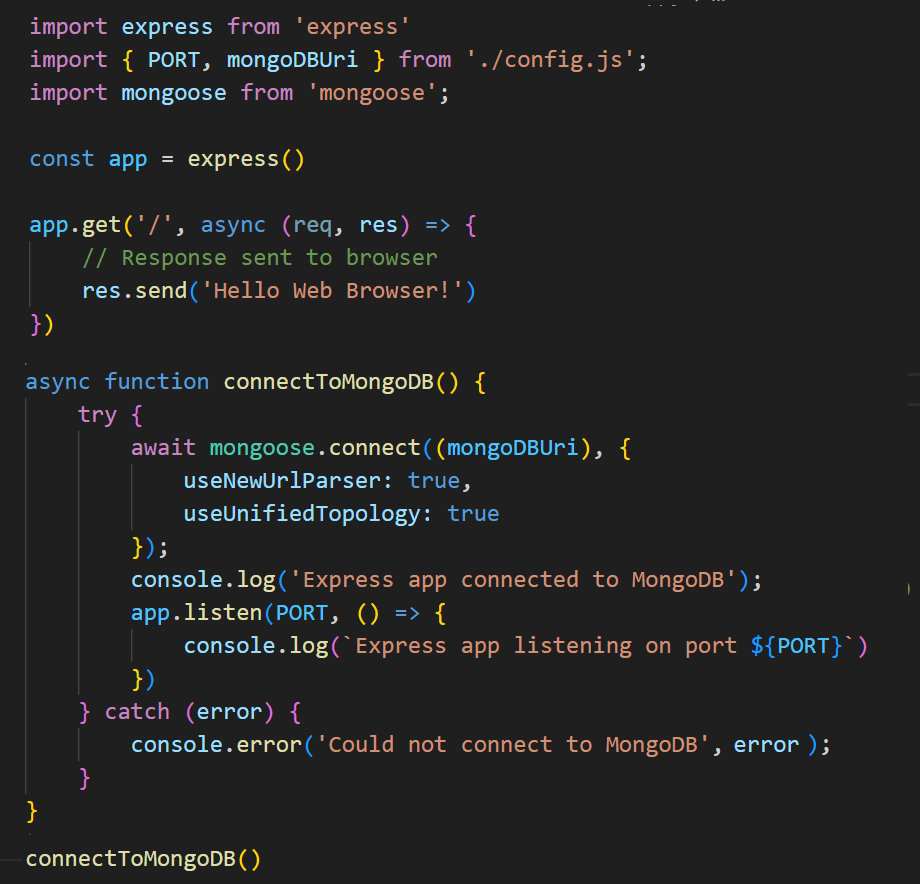
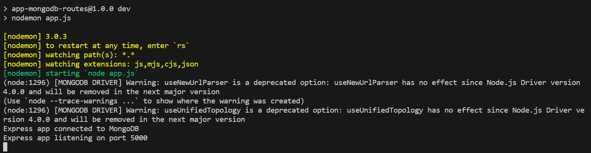
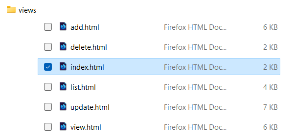
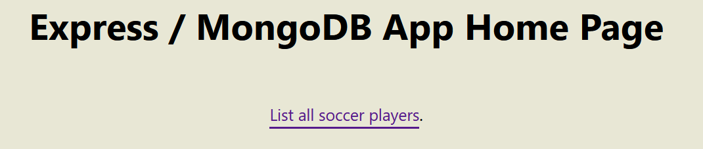
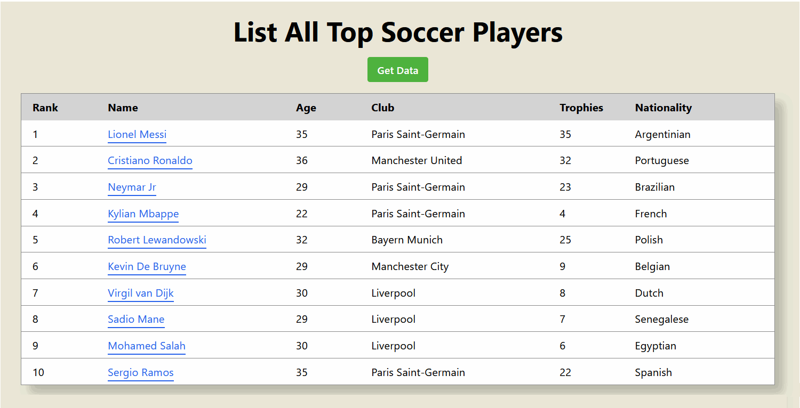
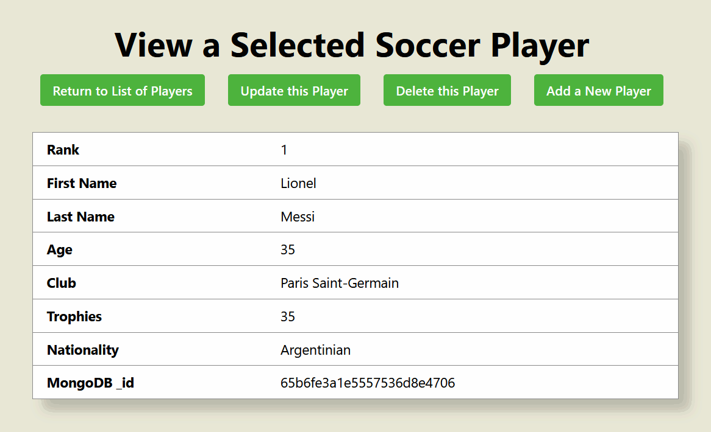

Learning Goals
At the end of this Tutorial, you will be able to:
- Create a schema for accessing MongoDB with Express.
- Create routes in Express for accessing data stored on MongoDB.
- Verify the middleware and backend code with basic web pages.
Creating a folder structure
Before continuing, close any Node.js apps that may be running on your machine. Also close any open terminals.
In a previous Tutorial, you created the folder structure shown below for an Express/MongoDB app.

Copy the /app-mongodb-basic folder and rename it to /app-mongodb-routes.
Installing CORS
For your new app, you will need to install the CORS middleware module.
- Open a Command prompt or VS Code Terminal, and navigate to the folder that holds your app. For example:
cd apps-mongodb/app-mongodb-routes/server - Install the CORS module locally as follows:
npm i cors
This will update the package.json file and the node_modules subfolder.
Updating your package.json file
Open your package.json file and update it for your new MongoDB app as shown below.

Creating your models.js file
Because your app connects to MongoDB Atlas with the mongoose module, you will need to create a schema or 'model' for the data you want to work with.
Follow these steps:
- In your /server folder, create a subfolder named /models.
- Download the models.js file to this subfolder.
This models.js file looks as shown below.

Creating your routes.js file
Your next task is to create a file that lists the routes supported by your app. Follow these steps:
- In your /server folder, create a subfolder named /routes.
- Download the routes.js file to this subfolder.
Creating views for your data
To verify your routes are working correctly, you will use some basic web pages that will interact with your code.
- In your /server folder, create a subfolder named /views.
- Download the following five HTML files to this subfolder:
index.html
view.html
add.html
update.html
delete.html
Updating your app.js file
Your final task is to update the main app.js file of your Express/MongoDB.
- Open the Express/MongoDB app.js file you copied and pasted. It should look like that shown below. 
- Update the app code as follows and save the file:
import express from 'express' import { PORT, mongoDBUri } from './config.js'; import mongoose from 'mongoose'; import cors from 'cors' import soccerPlayerRoutes from './routes/routes.js'; const app = express() app.use(cors()) app.use(express.json()); app.use(soccerPlayerRoutes); async function connectToMongoDB() { try { await mongoose.connect((mongoDBUri), { useNewUrlParser: true, useUnifiedTopology: true, dbName: 'db_soccer_players' }); console.log('Express app connected to MongoDB'); app.listen(PORT, () => { console.log(`Express app listening on port ${PORT}`) }) } catch (error) { console.error('Could not connect to MongoDB', error); } } connectToMongoDB(); - Finally, in your terminal, start your new Express/MongoDB app:
npm run dev
Your terminal window should look as follows:
Testing your routes
You have not created a 'front-end' to interact with your backend Express / MongoDB app. For testing purposes, you can work with some basic web pages in your /views folder that use the JavaScript fetch() API to interact with your routes.
In Windows Explorer or Finder, go to your /views subfolder and then open the index.html in a web browser. Note that you will run these web pages directly from your machine's file system rather than a local web server.
On the Home screen, click the List all soccer players link.
This takes you to the list.html web page. Click the Get Data button to list all the soccer players from the MongoDB Atlas database.
Click on any one soccer player to display the view.html web page.
From this web page, you can update, add or delete players.
Experiment with these CRUD operations to verify that your backend code and database interactions are working correctly.